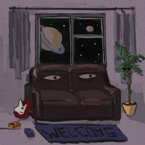

我的一些小世界
🎮
打游戏
线上嘴强王者，线下沉默寡言。游戏是我少数能放开说话的地方。
🎵
听歌
歌单比朋友圈精彩。戴上耳机，世界就是我的。
📷
摄影
因为不喜欢失去，所以平时喜欢随手记录下漂亮的风景（但不会拍人像T-T）
💻
算法学习
正在学 Python 和 C 语言，偶尔和 bug 大战三百回合。
🌸
二次元
追番看番、收藏壁纸，偶尔沉迷于纸片人的世界无法自拔。
🎬
剪辑
把平时的日常记录下来，剪成小视频和大家分享。

▶
点一下唱片播放 / 暂停
音量 70%
c/c++学习进度
python学习进度
星洛的 B 站空间
日常记录 · 剪辑 · 碎碎念
前往主页 →
点卡片或左边的链接都可以过去～